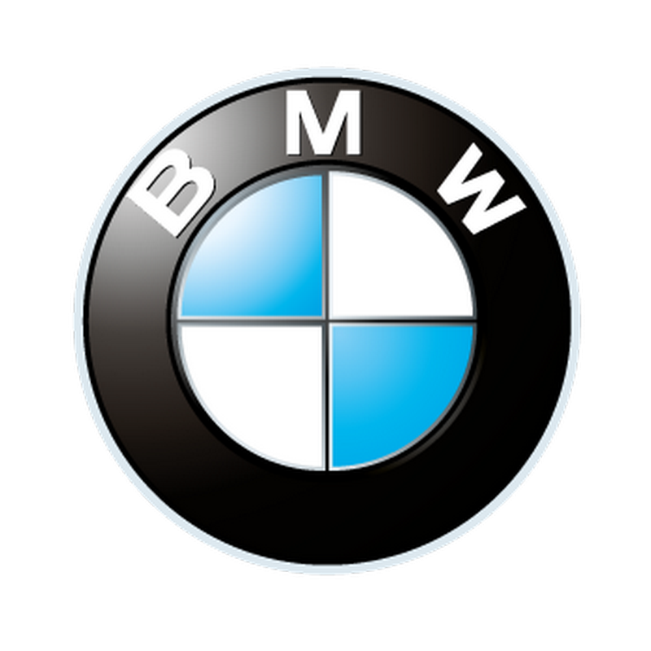

Over wat gaat het:
Mijn pagina zal vooral gaan over auto's. Ik verkoop ze in alle grote's en maten. Als je meer interesse hebt voor meubelen ga dan zeker naar Dieters pagina.
Geschiedenis:
Het woord automobiel is een Frans leenwoord en komt van automobile. Dit komt weer uit het Grieks en Latijn. Het eerste deel van het woord (auto) komt van het Griekse αυτος en betekent zelf. Het tweede deel van het woord (mobile, mobiel) komt van het Latijnse movere en betekent bewegen. De automobiel zoals wij hem nu kennen ontstond geleidelijk uit de door paarden getrokken rijtuigen en de fiets. De allereerste voorloper van de auto's waren wellicht de zeilwagens, die in de 18e eeuw in Europa onder gunstige omstandigheden reeds een zeer behoorlijke snelheid konden bereiken. Er zijn zelfs bronnen, die aangeven dat er onder de Egyptische farao Amenemhat III, in het tweede millennium vóór Christus, al zeilwagens bestonden. Voordat de moderne verbrandingsmotor werd toegepast, gebruikte men eerst nog stoommachines. Een van de bekendste ontwerpers van de stoomauto is Nicolas Joseph Cugnot (1725-1804). Deze officier gebruikte zijn stoomauto voor opdrachten binnen het leger. Ook Gurney ontwierp een stoomauto in 1832 voor de verbinding tussen Gloucester en Cheltenham in Engeland. De gangbare snelheid was toen ongeveer 25 kilometer per uur. Eenzelfde ontwikkeling was te zien in Nederland waar Sibrandus Stratingh uit Groningen in 1834 een (succesvol) experiment deed met een stoomauto. Tot aan de uitvinding van de verbrandingsmotor ontwikkelde de stoomauto zich geleidelijk, maar hij kon niet op tegen de verbrandingsmotor. De voordelen van deze motor waren voornamelijk een veel lager gewicht en minder brandstofverbruik voor meer vermogen. Hiermee was de opmars van dit type motor niet meer te stuiten. François Isaac de Rivaz, een Zwitserse uitvinder, ontwierp de eerste verbrandingsmotor met waterstofgas als brandstof in 1806. In 1862 bouwde de Belg Etienne Lenoir zijn eerste auto, de hippomobile, met een waterstofverbrandingsmotor. Pas toen de Duitser Nikolaus Otto in 1878 verbeteringen aanbracht werd de gasmotor van Lenoir een commercieel succes. Verdere grote aanpassingen werden gedaan door zijn landgenoot Gottlieb Daimler met zijn patent op de eerste succesvolle hogesnelheidsverbrandingsmotor (1885). De grootste verbeteringen aan de zware oliemotor zijn gedaan door Rudolf Diesel, eveneens uit Duitsland, die zijn eerste patenten kreeg in 1892. Tegen het einde van de 19e eeuw was de verbrandingsmotor de grote concurrent van de stoommachine in industrie en transport. Carl Benz bouwde in 1885 de (driewiel)auto uitgerust met een benzinemotor. Dit voertuig was de start voor de ontwikkeling en doorbraak van dit type verbrandingsmotoren. De eerste in België gebouwde auto was de Vincke en de eerste in Nederland gebouwde auto de Eysink. Welk merk auto de eerste personenauto in Nederland was is niet bekend, maar wel bekend is dat de industrieel Jos Bogaers de auto had gekocht en op 17 december 1895 zou hebben bereden.
Logo: |
Google maps: |
|  |